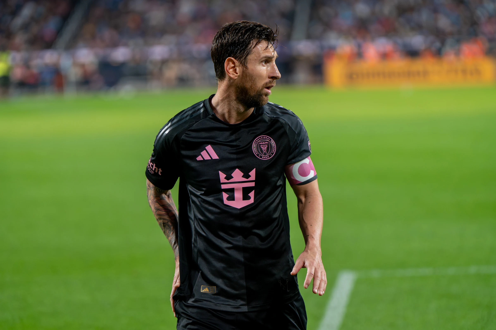
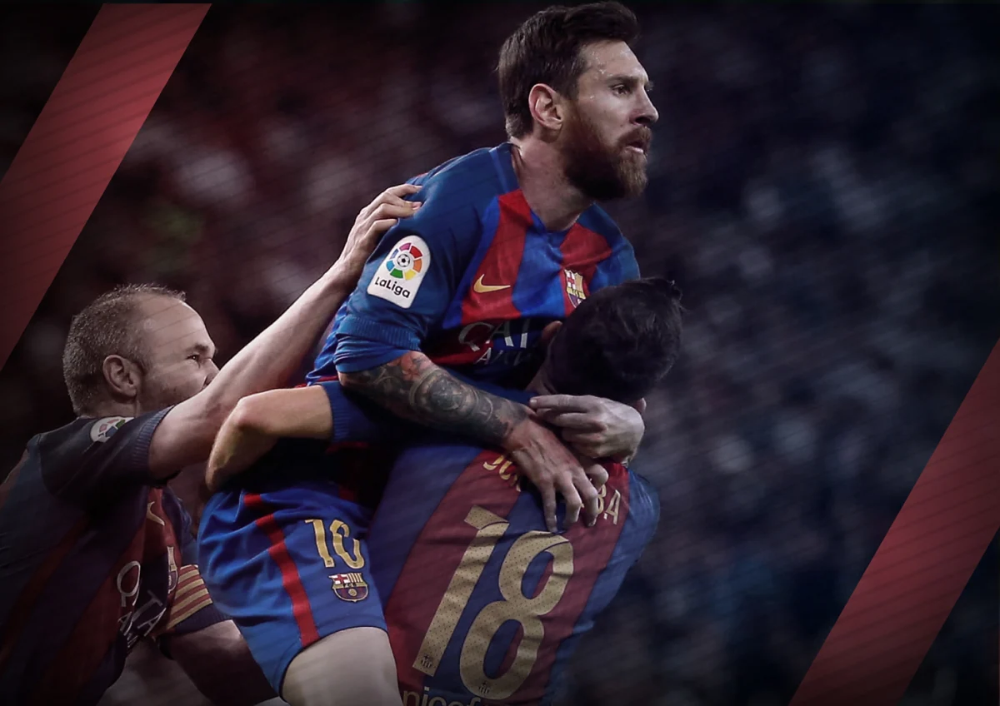
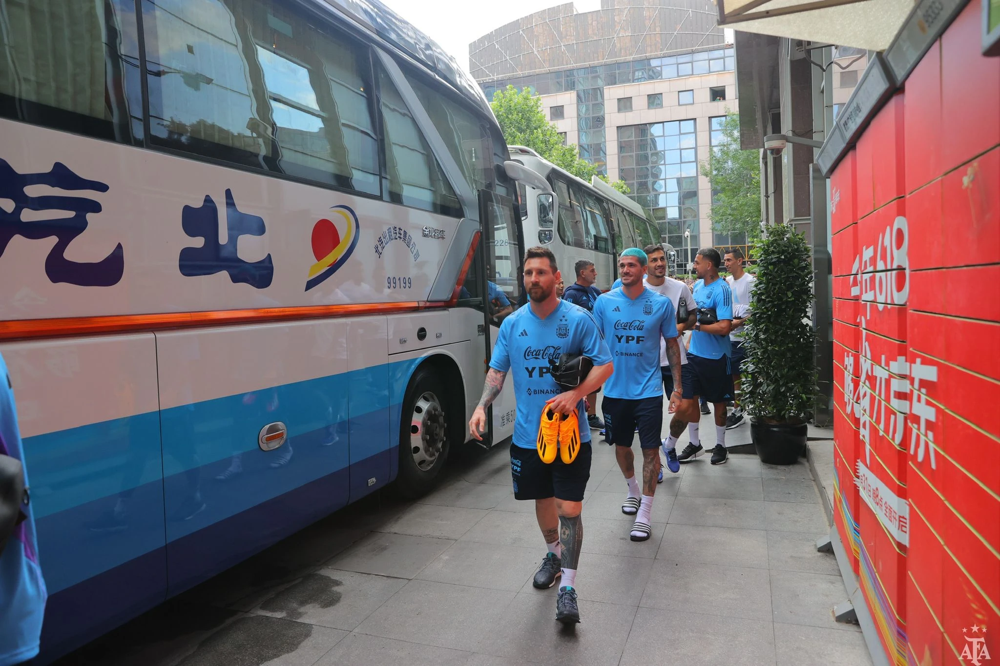
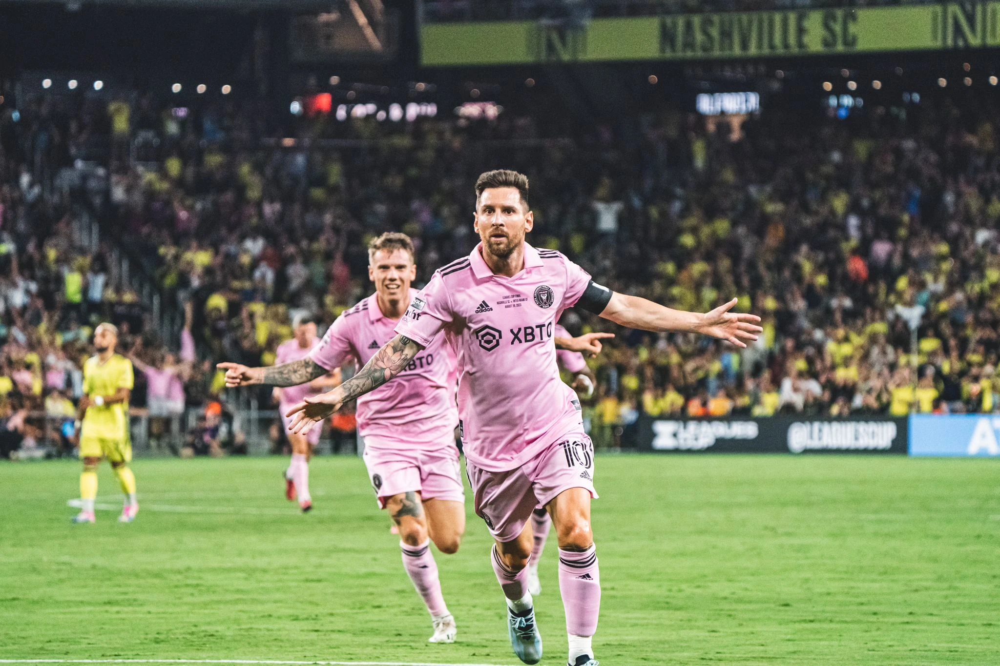
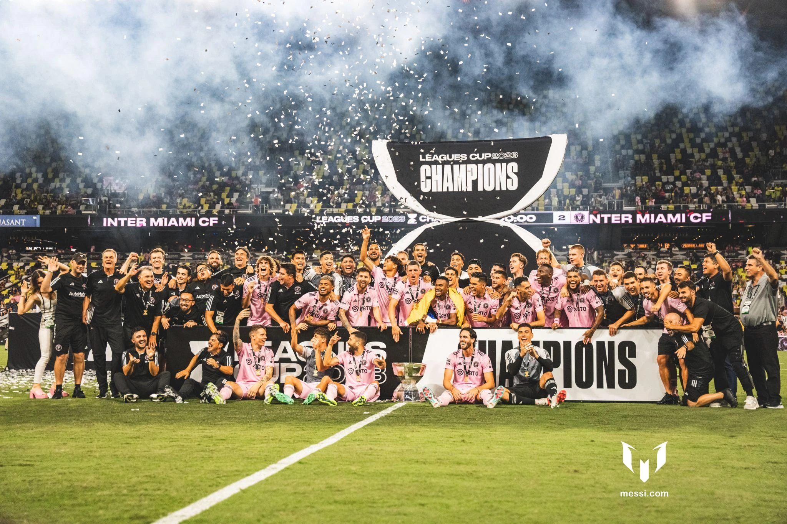

ROMA · 2009
Sul tetto d’Europa.
La Champions, i colori blaugrana e una notte entrata nella memoria del calcio.
Il gioco diventa istinto.
Il talento diventa storia.

01 / IL PERCORSO
Dalle prime corse a Rosario ai palcoscenici più grandi. Una storia da leggere attraverso i suoi capitoli.
Il pallone arriva prima di tutto. Le partite nel quartiere, la famiglia, il Newell’s Old Boys: è qui che comincia il legame fra Messi e il gioco.
Leggi la biografia ufficiale
La Masia, il debutto, il numero dieci. Barcellona è il luogo in cui un ragazzo diventa il centro di un modo nuovo di immaginare il calcio.

Una città diversa, nuovi compagni, un altro equilibrio. Due stagioni a Parigi aprono una fase nuova della sua carriera europea.

Il rosa prende il posto del blu. L’arrivo a Miami porta il suo calcio davanti a un nuovo pubblico, con la stessa voglia di giocare.
02 / IL MOMENTO
Lusail, 18 dicembre 2022. L’ultimo passo di un viaggio che l’Argentina non dimenticherà.

Una maglia che pesa.
Un sogno che appartiene a tutti.
03 / L’EREDITÀ
La Champions, i colori blaugrana e una notte entrata nella memoria del calcio.

La Copa América al Maracanã. La gioia di vincere insieme, con la propria nazionale.
04 / L’ARCHIVIO VISIVO
Le partite, le attese, gli abbracci. Dodici fotografie per attraversare la sua storia.




